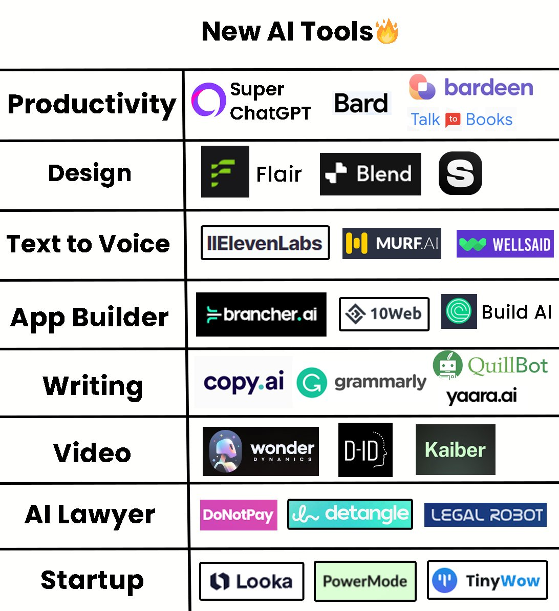

ChatGPT & Recruitment
ChatGPT & Recruitment
version 3.4 of my chat GPT series
Since I first ran this talk
Since I first ran this talk
over 1000 AI powered products have been made
over 1000 AI powered products have been made
I first ran this talk in March THIS YEAR
Adam Hall
Adam Hall
Former Agile Coach
Adam Hall
Former Agile Coach
Ametuer Artist
Adam Hall
Former Agile Coach
Ametuer Artist
Talkative Technophile
“It's always a people problem”


I think therefor...
I think therefor...
I am
Art
2 likes
11 likes
417,865 likes
what i learnt
Invite


My First App
You are working with a product team. I would like you to write a user story for each idea the team comes up with
Wedding seating plan app
As a busy bride to be I want to create a seating plan for the wedding So everyone will know their place, and the day will be amazing
New direct debit payment system on the app
As user on the app I want setup an automatic monthly payment system So I don't have to log in every month to pay manually
Upskilling
On my todo list I have the following items...
* Pilot a new tech test that has no coding interview * Make a recruitment version of the AI talk for an important client * Plan route home from the Netherlands
Tell me which I should be doing first and why in the style of an angry gangster who is fed up with me always forgetting to do things on my todo list.
You are an Movie API. You will respond to requests from me with an obscure description of the movie I have asked for that will be logical, but sounds like a weird way of describing it. For example:
Lord of the Rings
Jeweller makes a ring in a volcano and a little person destroys the ring in the same volcano
Up
An elderly man uses balloons to kidnap a small boy
Stereotypes
I'm writing an example CV for a careworker. I want you to create a short intro. Include their name, demographic and their favourite hobby.
I'm writing an example CV for a male careworker in Soho. I want you to create a short intro. Include their name, demographic and their favourite hobby.
Misinformation


Jobs

up to 49% of workers could have half or more of their tasks exposed to LLMs.
Better paying work has a higher chance of being automated by LLMs.
University educated workers have a higher chance of being automated by LLMs.
Conclusion
What is it good for?
What is it good for?
- Personal productivity
What is it good for?
- Personal productivity
- Amusing team collaboration
What is it good for?
- Personal productivity
- Amusing team collaboration
- Instant mentoring
What is it good for?
- Personal productivity
- Amusing team collaboration
- Instant mentoring
- Minimum Viable Experiments
What is it good for?
- Personal productivity
- Amusing team collaboration
- Instant mentoring
- Minimum Viable Experiments
- Lazy goal research
What is it good for?
- Personal productivity
- Amusing team collaboration
- Instant mentoring
- Minimum Viable Experiments
- GLazy goal research
- Getting investors
What is it bad at?
What is it bad at?
- Single source of Truth
What is it bad at?
- Single source of Truth
- Reliability
What is it bad at?
- Single source of Truth
- Reliability
- Complexity

Ginni Rometty
Some people call this artificial intelligence, but the reality is this technology will enhance us. So instead of artificial intelligence, I think we'll augment our intelligence.

by mitch0zᵍᵐ